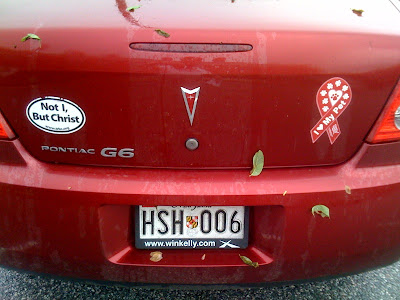

Bumper Sticker Logic
2010-05-03

Saw this car outside the bank this morning. By the transitive property of equality, would it be accurate to say that Christ loves this person's pet? What are the odds that this was the driver's intended meaning? What kind of person believes that the two most important things a passing driver could know about them is that they are both devout and pet-loving?Labels: Bumper Stickers